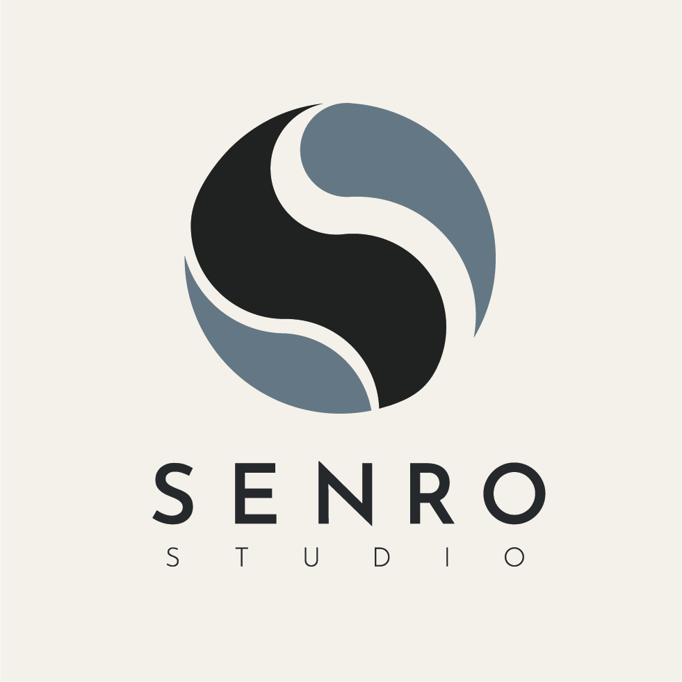
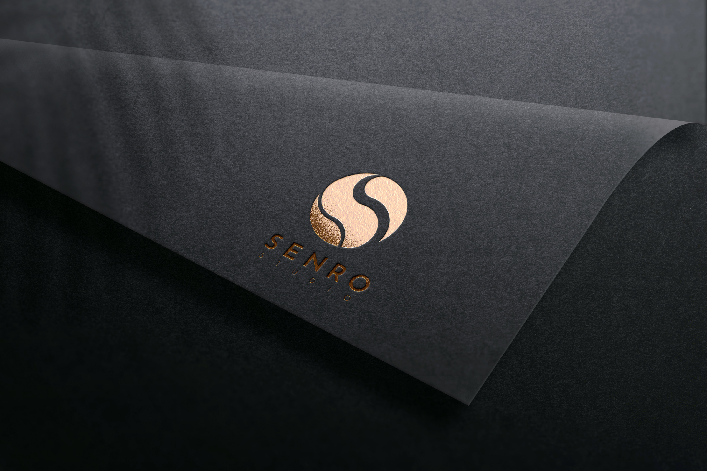
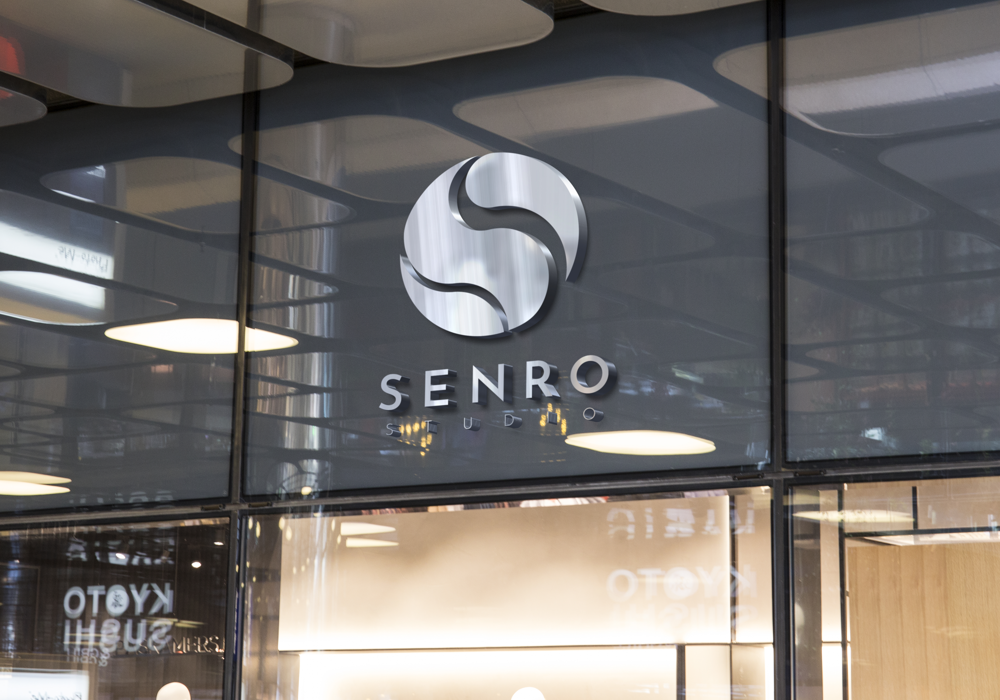

Projet scolaire & personnel
Senro Studio Logotype
Création d'une identité visuelle afin de concevoir le logo d'une agence de communication. Ce logo est pensé comme marqueur de sa communication externe. Le projet est fictif et conçu dans le cadre de ma formation en DEUST WMI mais me permet de construire également mon logo d'artiste.




Senro Studio Logotype — Le portfolio complet
Vous pourrez trouver dans ce portfolio toute ma démarche pour arriver au résultat final de Senro Studio.
Document complet
Portfolio Senro Studio
Retrouvez l'ensemble de la démarche de création du logotype à travers le document PDF complet.
Télécharger le portfolio PDF